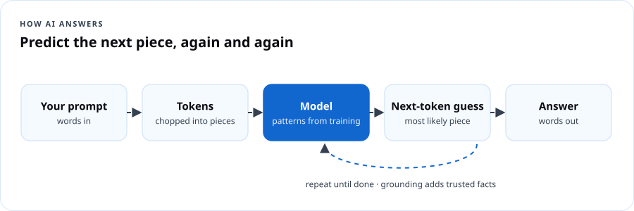
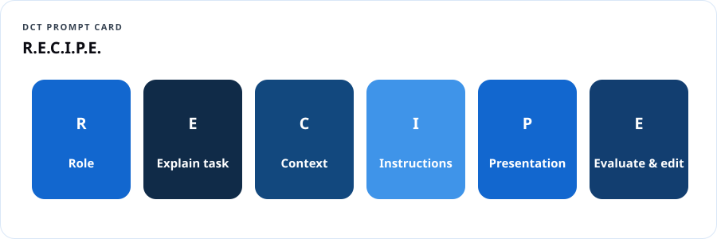
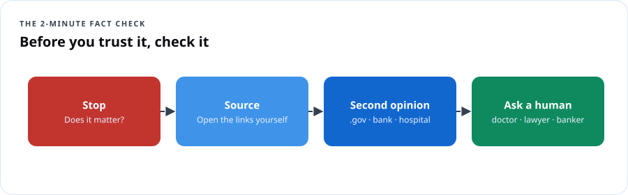

AI Fundamentals — Everyday AI
Course overview
You've heard about ChatGPT, Copilot, Gemini and Claude. Maybe you've tried one. Maybe a grandchild set it up for you, or your boss told you to "use AI" with no instructions. This workshop gives you four things in four sessions:
- Understand what AI is and how it comes up with answers.
- Use it with prompts that actually work.
- Protect your private information and check what AI gets wrong.
- Create something useful you'll keep using.
No coding. No jargon you won't get a translation for. Bring a phone, tablet or laptop.
Learning outcomes
- Explain in your own words how a chatbot produces an answer and why it can be confidently wrong.
- Write prompts using the R.E.C.I.P.E. method.
- Name five kinds of information you should never paste into an AI tool.
- Fact-check an AI answer in under two minutes.
- Spot AI-powered scams: voice clones, fake videos, fake "AI investment" pitches.
- Build a personal "AI toolkit": three prompts you'll use every week.
Session plan
| Session | Theme | You leave with |
|---|---|---|
| 1 | Understand: What AI is and how it answers | Your first conversation with an AI tool + a "what AI is / isn't" card |
| 2 | Use: Prompts that work | The R.E.C.I.P.E. card + 3 saved prompts |
| 3 | Protect: Privacy, accuracy and scams | The "Never paste" list + the 2-minute fact check |
| 4 | Create: Make something useful | A finished project (letter, plan, flyer, budget, study guide) |
Tools we use
Any free general AI assistant works: Microsoft Copilot, ChatGPT, Google Gemini, Claude or Meta AI. Facilitators should check each tool's current age requirements and terms before class; many require users to be 13+ (and some 18+, or 13–17 with parental permission). If a school or agency provides an approved tool, use that.
Session 1 — Understand: what AI is and how it answers
1.1 Warm-up (10 min)
Ask the room: "Where did you already use AI this week without calling it AI?" Collect answers: phone autocorrect, face unlock, Netflix suggestions, spam filters, GPS traffic, bank fraud alerts, smart speakers.
Dope Translation: AI has been in your pocket for years. Autocorrect is AI. "Recommended for you" is AI. The new chatbots are just the version that talks back.
1.2 What AI is
Artificial intelligence is software that learns patterns from lots of examples so it can make predictions or create things — instead of following only rules a person typed in by hand.
| Kind | What it does | Example |
|---|---|---|
| Predictive AI | Guesses what's likely | Fraud alert from your bank |
| Recognition AI | Identifies things | Face unlock, voice assistants |
| Generative AI | Creates new text, images, audio, video | Chatbots, image makers |
| Agentic AI | Takes steps and actions for you | An assistant that books an appointment |
1.3 How a chatbot answers

- It learned from enormous amounts of text.
- Your question gets broken into pieces (tokens).
- It predicts, one piece at a time, what words most likely come next.
- It doesn't "look up the truth" unless it's connected to search or documents — it predicts.
Dope Translation: Picture the friend who's been on every group chat in the city for twenty years. Start a sentence and they can finish it — smooth, confident, in your style. But sometimes they're just making it sound right. That's AI. Great at sounding right. Your job is checking if it is right.
1.4 What AI is — and isn't
| AI is | AI isn't |
|---|---|
| Fast at drafting, summarizing, explaining, brainstorming | A person, a friend, or a professional with a license |
| Good with patterns in language | Always correct, current or fair |
| A tool you direct | Responsible for decisions — you are |
1.5 Hands-on (40 min)
- Open your AI tool. Type: "Explain what you are in three sentences, like I'm 12."
- Ask: "What's one thing you're bad at?"
- Ask it something you already know well — your neighborhood, your job, your favorite team's 2023 season. Grade it. Where was it wrong?
- Share one surprising right answer and one wrong answer with your table.
Session 1 check
Session 2 — Use: prompts that work
2.1 The R.E.C.I.P.E. method

| Letter | Means | Example |
|---|---|---|
| R — Role | Who should the AI act like? | "Act as a patient computer teacher…" |
| E — Explain the task | What do you want? | "…explain how to set up a passkey…" |
| C — Context | Who's it for? What's the situation? | "…for my 74-year-old dad who uses an iPhone…" |
| I — Instructions & limits | Rules, length, tone, what to avoid | "…in 5 short numbered steps, no tech words…" |
| P — Presentation | Format | "…as a list I can print in large type." |
| E — Evaluate & edit | Ask follow-ups to improve it | "Make step 3 simpler." / "What could go wrong?" |
Dope Translation: Walking into a barbershop and saying "cut it" gets you a haircut. Walking in and saying "low taper, keep the length on top, line it up, no part" gets you your haircut. Prompts work the same way.
2.2 Before and after
| Weak prompt | R.E.C.I.P.E. prompt |
|---|---|
| "Write a resume." | "Act as a career coach. Write a one-page resume summary for a U.S. Army veteran (MOS 25B, IT specialist, 6 years) applying for a help-desk job. Use 4 bullet points with numbers where possible. Plain, confident tone." |
| "Healthy meals." | "Act as a budget-minded home cook. Give me 5 dinners under $10 each for a family of 4, using ingredients from a regular grocery store. Include a shopping list grouped by aisle." |
| "Explain the cloud." | "Explain cloud computing to a high-school sophomore who loves basketball, using a basketball analogy, in under 100 words." |
2.3 Power moves
- Ask for options: "Give me three versions: formal, friendly, short."
- Ask it to ask you: "Before you answer, ask me 3 questions so you get it right."
- Make it check itself: "What assumptions did you make? What might be wrong?"
- Change the reading level: "Rewrite at a 6th-grade reading level."
- Translate: "Translate into Spanish for a parent newsletter, warm tone." (Have a fluent speaker review anything important.)
2.4 Hands-on (45 min) — build your three keeper prompts
Pick three from this menu and customize each with R.E.C.I.P.E.:
- Weekly meal plan + grocery list on a budget
- Email to a landlord, teacher, or employer
- Study guide and practice quiz on any topic
- Explain a confusing letter (with private info removed — see Session 3)
- Plan a family event or church program
- Small-business social media posts for a week
- Practice job interview: "Interview me for a ___ job, one question at a time, and give feedback."
Save them in your phone's notes app.
Session 2 check
Session 3 — Protect: privacy, accuracy and scams
3.1 The "Never paste" list
Unless you're using a tool your school, employer or agency has approved for that kind of data, never paste:
- Government ID numbers — Social Security, driver's license, passport, Medicare/Medicaid numbers.
- Money details — bank or card numbers, account logins, PINs.
- Passwords, codes, security answers — and never one-time codes, ever.
- Health details that identify you or someone else.
- Other people's private information — students' records, clients' files, a friend's screenshot.
- Work confidential information — contracts, customer lists, internal plans — unless your employer allows it in that tool.
Redact instead: replace names and numbers with placeholders. "My landlord [NAME] sent me a notice saying I owe [AMOUNT]…"
Dope Translation: Treat an AI chat like a crowded bus. You can talk about your day. You don't read your bank card number out loud.
3.2 Why AI gets things wrong
- Hallucinations: it invents facts, quotes, links, laws or court cases that sound real.
- Out of date: its training has a cutoff date unless it can search.
- Bias: it can repeat unfair patterns from the data it learned from.
- Agrees too easily: it may go along with a wrong assumption in your question.
3.3 The 2-minute fact check

- Stop — Is this something that matters (health, money, law, news, your job)?
- Source — Ask: "What are your sources?" then open them yourself. Fake links are common.
- Second opinion — Check one trusted site (.gov, a major hospital, your bank's real website, a reputable news outlet).
- Ask a human for anything with real consequences — doctor, pharmacist, lawyer, banker, teacher.
3.4 AI-powered scams
| Scam | What it looks like | Your move |
|---|---|---|
| Voice clone "family emergency" | A call that sounds exactly like your grandson: "I'm in jail, send money, don't tell Mom." | Hang up. Call him back on his real number. Set a family code word. |
| Deepfake video | A celebrity or official "endorsing" an investment or giveaway | Real public figures don't DM you investment deals. Check official accounts. |
| "AI trading bot" investments | Guaranteed returns from secret AI | Guaranteed returns = scam. Check with Investor.gov. |
| Perfect-grammar phishing | Polished emails/texts from "your bank" or "USPS" | Don't click. Go to the real site or app yourself. |
| Fake AI apps | Lookalike "ChatGPT" apps charging subscriptions | Download only from the official company in the official app store. |
Report scams: ReportFraud.ftc.gov · internet crime to the FBI at ic3.gov · if your identity was stolen: IdentityTheft.gov.
3.5 Hands-on (40 min)
- Catch the hallucination: Ask your AI for "three Supreme Court cases about [some odd topic] with citations." Try to verify them. (Many will be wrong or invented.)
- Redaction drill: Rewrite a sample letter (provided) removing every private detail, then ask AI to explain it.
- Family code word: Write yours down (don't share it here). Plan who you'll tell.
Session 3 check
Session 4 — Create: make something useful
4.1 Choose a project (pick one track)
| Track | Project | Prompt starter |
|---|---|---|
| Youth | Study guide + 10-question practice quiz for a real class | "Act as a tutor. Make a one-page study guide on [topic] for 10th grade, then 10 multiple-choice questions with answers at the end." |
| Seniors | Large-print medication & appointment schedule template (no real health details) | "Create a weekly table with columns Day, Morning, Afternoon, Evening, Appointments, Notes. Large clear headings." |
| Job seekers | Résumé bullets + mock interview | "Turn these job duties into 5 résumé bullets with numbers: [duties]." |
| Small business | One week of social posts + a customer reply template | "Act as a marketing assistant for a [type] business in [city]. Write 5 posts…" |
| Families & churches | Event plan with timeline, roles and flyer text | "Plan a youth tech night for 40 people with a $300 budget…" |
| Gardeners & hobbyists | Planting calendar for your area | "Make a fall planting schedule for a small raised bed in USDA zone 7b, Maryland." |
4.2 Make it yours
- Draft with R.E.C.I.P.E.
- Improve with two follow-ups.
- Fact-check anything factual.
- Edit by hand — add your voice, fix anything off.
- Decide if you'll disclose AI use (school and work rules vary — ask).
4.3 Share-out and certificate (20 min)
Each person shows their project and names one thing AI got wrong that they fixed.
Final reflection
Take-home cards (printable)
What AI is: a pattern-predicting tool that's fast and fluent — and sometimes wrong. R.E.C.I.P.E.: Role · Explain · Context · Instructions · Presentation · Evaluate. Never paste: IDs · money details · passwords/codes · health info · other people's info · work secrets. 2-minute check: Stop · Source · Second opinion · Ask a human. Scam rule: Urgent + secret + money = hang up and verify.
Facilitator guide
- Room setup: tables of 4–6, one confident tech user per table. Charge stations. Wi-Fi password large on the wall.
- Accounts: many tools now work without an account for basic use; have one demo account on the projector. Check age rules for youth groups and get parent permission where required.
- Seniors: slow pace, larger fonts (phone accessibility settings), print every card. Celebrate wins out loud.
- Teens: be direct about school academic-honesty rules. Frame AI as a tutor, not a ghostwriter. Discuss deepfakes and sextortion awareness with school counselors' guidance.
- Mixed audiences: "Explain it to my grandma / explain it to my grandson" pairs are gold.
- Hard questions you'll get: Will AI take my job? (It changes tasks; people who use it well have an edge.) Is it listening to me? (Show where privacy settings and chat history controls are in each tool.) Is it a sin / is it evil? (Respect faith perspectives; focus on honest, careful use.)
- Evaluation: pre/post confidence survey (1–5) on: explaining AI, writing prompts, protecting info, spotting scams.
Resources
- Microsoft Copilot · ChatGPT · Google Gemini · Claude
- FTC: Consumer advice on AI and scams
- AARP Fraud Watch Network — helpline 877-908-3360
- Common Sense Media: AI ratings and guides